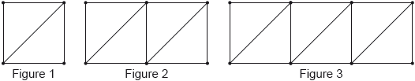
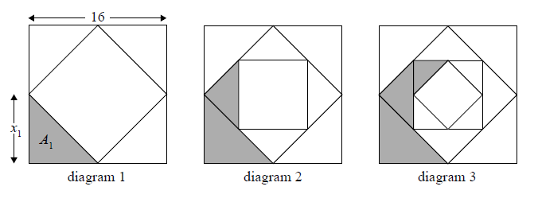
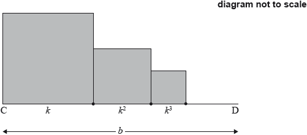

SL Paper 1
Find \({\log _2}32\) .
Given that \({\log _2}\left( {\frac{{{{32}^x}}}{{{8^y}}}} \right)\) can be written as \(px + qy\) , find the value of p and of q.
Find the value of each of the following, giving your answer as an integer.
\({\log _6}36\)
\({\log _6}4 + {\log _6}9\)
\({\log _6}2 - {\log _6}12\)
Expand \({(2 + x)^4}\) and simplify your result.
Hence, find the term in \({x^2}\) in \({(2 + x)^4}\left( {1 + \frac{1}{{{x^2}}}} \right)\) .
An arithmetic sequence has the first term \(\ln a\) and a common difference \(\ln 3\).
The 13th term in the sequence is \(8\ln 9\). Find the value of \(a\).
Consider the following sequence of figures.

Figure 1 contains 5 line segments.
Given that Figure \(n\) contains 801 line segments, show that \(n = 200\).
Find the total number of line segments in the first 200 figures.
Let \(f(x) = k{\log _2}x\) .
Given that \({f^{ - 1}}(1) = 8\) , find the value of \(k\) .
Find \({f^{ - 1}}\left( {\frac{2}{3}} \right)\) .
In an arithmetic sequence, the first term is 3 and the second term is 7.
Find the common difference.
Find the tenth term.
Find the sum of the first ten terms of the sequence.
The first three terms of a infinite geometric sequence are \(m - 1,{\text{ 6, }}m + 4\), where \(m \in \mathbb{Z}\).
Write down an expression for the common ratio, \(r\).
Hence, show that \(m\) satisfies the equation \({m^2} + 3m - 40 = 0\).
Find the two possible values of \(m\).
Find the possible values of \(r\).
The sequence has a finite sum.
State which value of \(r\) leads to this sum and justify your answer.
The sequence has a finite sum.
Calculate the sum of the sequence.
In an arithmetic sequence, the first term is \(2\) and the second term is \(5\).
Find the common difference.
Find the eighth term.
Find the sum of the first eight terms of the sequence.
Write the expression \(3\ln 2 - \ln 4\) in the form \(\ln k\), where \(k \in \mathbb{Z}\).
Hence or otherwise, solve \(3\ln 2 - \ln 4 = - \ln x\).
The sums of the terms of a sequence follow the pattern
\({S_1} = 1 + k,{\text{ }}{S_2} = 5 + 3k,{\text{ }}{S_3} = 12 + 7k,{\text{ }}{S_4} = 22 + 15k,{\text{ }} \ldots ,{\text{ where }}k \in \mathbb{Z}.\)
Given that \({u_1} = 1 + k\), find \({u_2},{\text{ }}{u_3}\) and \({u_4}\).
Find a general expression for \({u_n}\).
Consider the arithmetic sequence \(2{\text{, }}5{\text{, }}8{\text{, }}11{\text{,}} \ldots \) .
Find \({u_{101}}\) .
Consider the arithmetic sequence \(2{\text{, }}5{\text{, }}8{\text{, }}11{\text{,}} \ldots \) .
Find the value of n so that \({u_n} = 152\) .
The first two terms of an infinite geometric sequence, in order, are
\(2{\log _2}x,{\text{ }}{\log _2}x\), where \(x > 0\).
The first three terms of an arithmetic sequence, in order, are
\({\log _2}x,{\text{ }}{\log _2}\left( {\frac{x}{2}} \right),{\text{ }}{\log _2}\left( {\frac{x}{4}} \right)\), where \(x > 0\).
Let \({S_{12}}\) be the sum of the first 12 terms of the arithmetic sequence.
Find \(r\).
Show that the sum of the infinite sequence is \(4{\log _2}x\).
Find \(d\), giving your answer as an integer.
Show that \({S_{12}} = 12{\log _2}x - 66\).
Given that \({S_{12}}\) is equal to half the sum of the infinite geometric sequence, find \(x\), giving your answer in the form \({2^p}\), where \(p \in \mathbb{Q}\).
The fifth term in the expansion of the binomial \({(a + b)^n}\) is given by \(\left( {\begin{array}{*{20}{c}}
{10}\\
4
\end{array}} \right){p^6}{(2q)^4}\) .
Write down the value of \(n\).
Write down a and b, in terms of p and/or q.
Write down an expression for the sixth term in the expansion.
An arithmetic sequence has \({u_1} = {\text{lo}}{{\text{g}}_c}\left( p \right)\) and \({u_2} = {\text{lo}}{{\text{g}}_c}\left( {pq} \right)\), where \(c > 1\) and \(p,\,\,q > 0\).
Show that \(d = {\text{lo}}{{\text{g}}_c}\left( q \right)\).
Let \(p = {c^2}\) and \(q = {c^3}\). Find the value of \(\sum\limits_{n = 1}^{20} {{u_n}} \).
In an arithmetic sequence, the third term is 10 and the fifth term is 16.
Find the common difference.
Find the first term.
Find the sum of the first 20 terms of the sequence.
Consider the infinite geometric sequence \(3{\text{, }}3(0.9){\text{, }}3{(0.9)^2}{\text{, }}3{(0.9)^3}{\text{, }} \ldots \) .
Write down the 10th term of the sequence. Do not simplify your answer.
Consider the infinite geometric sequence \(3{\text{, }}3(0.9){\text{, }}3{(0.9)^2}{\text{, }}3{(0.9)^3}{\text{, }} \ldots \) .
Find the sum of the infinite sequence.
Let \(f(x) = lo{g_3}\sqrt x \) , for \(x > 0\) .
Show that \({f^{ - 1}}(x) = {3^{2x}}\) .
Write down the range of \({f^{ - 1}}\) .
Let \(g(x) = {\log _3}x\) , for \(x > 0\) .
Find the value of \(({f^{ - 1}} \circ g)(2)\) , giving your answer as an integer.
The first three terms of an infinite geometric sequence are 32, 16 and 8.
Write down the value of r .
Find \({u_6}\) .
Find the sum to infinity of this sequence.
The first two terms of an infinite geometric sequence are u1 = 18 and u2 = 12sin2 θ , where 0 < θ < 2\(\pi \) , and θ ≠ \(\pi \).
Find an expression for r in terms of θ.
Find the possible values of r.
Show that the sum of the infinite sequence is \(\frac{{54}}{{2 + {\text{cos}}\,\left( {2\theta } \right)}}\).
Find the values of θ which give the greatest value of the sum.
Three consecutive terms of a geometric sequence are \(x - 3\), 6 and \(x + 2\).
Find the possible values of \(x\).
The values in the fourth row of Pascal’s triangle are shown in the following table.

Write down the values in the fifth row of Pascal’s triangle.
Hence or otherwise, find the term in \({x^3}\) in the expansion of \({(2x + 3)^5}\).
The sides of a square are 16 cm in length. The midpoints of the sides of this square are joined to form a new square and four triangles (diagram 1). The process is repeated twice, as shown in diagrams 2 and 3.

Let \({x_n}\) denote the length of one of the equal sides of each new triangle.
Let \({A_n}\) denote the area of each new triangle.
The following table gives the values of \({x_n}\) and \({A_n}\), for \(1 \leqslant n \leqslant 3\). Copy and complete the table. (Do not write on this page.)
| \(n\) | 1 | 2 | 3 |
| \({x_n}\) | 8 | 4 | |
| \({A_n}\) | 32 | 16 |
The process described above is repeated. Find \({A_6}\).
Consider an initial square of side length \(k {\text{ cm}}\). The process described above is repeated indefinitely. The total area of the shaded regions is \(k {\text{ c}}{{\text{m}}^2}\). Find the value of \(k\).
Find the value of \({\log _2}40 - {\log _2}5\) .
Find the value of \({8^{{{\log }_2}5}}\) .
Given that \({2^m} = 8\) and \({2^n} = 16\), write down the value of \(m\) and of \(n\).
Hence or otherwise solve \({8^{2x + 1}} = {16^{2x - 3}}\).
The first three terms of a geometric sequence are \(\ln {x^{16}}\), \(\ln {x^8}\), \(\ln {x^4}\), for \(x > 0\).
Find the common ratio.
Solve \(\sum\limits_{k = 1}^\infty {{2^{5 - k}}\ln x = 64} \).
Ann and Bob play a game where they each have an eight-sided die. Ann’s die has three green faces and five red faces; Bob’s die has four green faces and four red faces. They take turns rolling their own die and note what colour faces up. The first player to roll green wins. Ann rolls first. Part of a tree diagram of the game is shown below.

Find the probability that Ann wins on her first roll.
(i) The probability that Ann wins on her third roll is \(\frac{5}{8} \times \frac{4}{8} \times p \times q\ \times \frac{3}{8}\).
Write down the value of \(p\) and of \(q\).
(ii) The probability that Ann wins on her tenth roll is \(\frac{3}{8}{r^k}\) where \(r \in \mathbb{Q},{\text{ }}k \in \mathbb{Z}\).
Find the value of \(r\) and of \(k\).
Find the probability that Ann wins the game.
Solve \({\log _2}(2\sin x) + {\log _2}(\cos x) = - 1\), for \(2\pi < x < \frac{{5\pi }}{2}\).
Write down the value of
(i) \({\log _3}27\);
(ii) \({\log _8}\frac{1}{8}\);
(iii) \({\log _{16}}4\).
Hence, solve \({\log _3}27 + {\log _8}\frac{1}{8} - {\log _{16}}4 = {\log _4}x\).
Solve \({\log _2}x + {\log _2}(x - 2) = 3\) , for \(x > 2\) .
In the expansion of \({(3x + 1)^n}\), the coefficient of the term in \({x^2}\) is \(135n\), where \(n \in {\mathbb{Z}^ + }\). Find \(n\).
Let \(f(x) = 3\ln x\) and \(g(x) = \ln 5{x^3}\) .
Express \(g(x)\) in the form \(f(x) + \ln a\) , where \(a \in {{\mathbb{Z}}^ + }\) .
The graph of g is a transformation of the graph of f . Give a full geometric description of this transformation.
In an arithmetic sequence, \({u_1} = 2\) and \({u_3} = 8\) .
Find d .
Find \({u_{20}}\) .
Find \({S_{20}}\) .
Given that \({\left( {1 + \frac{2}{3}x} \right)^n}{(3 + nx)^2} = 9 + 84x + \ldots \) , find the value of n .
The following diagram shows [AB], with length 2 cm. The line is divided into an infinite number of line segments. The diagram shows the first three segments.

The length of the line segments are \(p{\text{ cm}},{\text{ }}{p^2}{\text{ cm}},{\text{ }}{p^3}{\text{ cm}},{\text{ }} \ldots \), where \(0 < p < 1\).
Show that \(p = \frac{2}{3}\).
The following diagram shows [CD], with length \(b{\text{ cm}}\), where \(b > 1\). Squares with side lengths \(k{\text{ cm}},{\text{ }}{k^2}{\text{ cm}},{\text{ }}{k^3}{\text{ cm}},{\text{ }} \ldots \), where \(0 < k < 1\), are drawn along [CD]. This process is carried on indefinitely. The diagram shows the first three squares.

The total sum of the areas of all the squares is \(\frac{9}{{16}}\). Find the value of \(b\).
Let \(f(x) = \frac{1}{4}{x^2} + 2\) . The line L is the tangent to the curve of f at (4, 6) .
Let \(g(x) = \frac{{90}}{{3x + 4}}\) , for \(2 \le x \le 12\) . The following diagram shows the graph of g .

Find the equation of L .
Find the area of the region enclosed by the curve of g , the x-axis, and the lines \(x = 2\) and \(x = 12\) . Give your answer in the form \(a\ln b\) , where \(a,b \in \mathbb{Z}\) .
The graph of g is reflected in the x-axis to give the graph of h . The area of the region enclosed by the lines L , \(x = 2\) , \(x = 12\) and the x-axis is 120 \(120{\text{ c}}{{\text{m}}^2}\) .
Find the area enclosed by the lines L , \(x = 2\) , \(x = 12\) and the graph of h .
Let \(x = \ln 3\) and \(y = \ln 5\). Write the following expressions in terms of \(x\) and \(y\).
\(\ln \left( {\frac{5}{3}} \right)\).
\(\ln 45\).
Let \({\log _3}p = 6\) and \({\log _3}q = 7\) .
Find \({\log _3}{p^2}\) .
Find \({\log _3}\left( {\frac{p}{q}} \right)\) .
Find \({\log _3}(9p)\) .
Let \(f(x) = {{\rm{e}}^{x + 3}}\) .
(i) Show that \({f^{ - 1}}(x) = \ln x - 3\) .
(ii) Write down the domain of \({f^{ - 1}}\) .
Solve the equation \({f^{ - 1}}(x) = \ln \frac{1}{x}\) .
In an arithmetic sequence, the first term is 8 and the second term is 5.
Find the common difference.
Find the tenth term.
Find the sum of the first ten terms.
Let \(f'(x) = \frac{{6 - 2x}}{{6x - {x^2}}}\), for \(0 < x < 6\).
The graph of \(f\) has a maximum point at P.
The \(y\)-coordinate of P is \(\ln 27\).
Find the \(x\)-coordinate of P.
Find \(f(x)\), expressing your answer as a single logarithm.
The graph of \(f\) is transformed by a vertical stretch with scale factor \(\frac{1}{{\ln 3}}\). The image of P under this transformation has coordinates \((a,{\text{ }}b)\).
Find the value of \(a\) and of \(b\), where \(a,{\text{ }}b \in \mathbb{N}\).